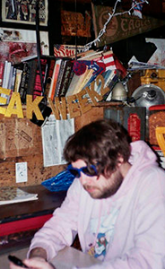

El indie es un género caracterizado por sonidos alternativos y una producción más creativa e independiente!
Indie is a genre characterized by alternative sounds and a more creative and independent production!
Eyedress
Músico q fusiona indie, post-punk y bedroom pop con una estética relajada y nostálgica. Sus canciones tienen un sonido muy reconocible y dreamy!
A musician who blends indie, post-punk, and bedroom pop with a relaxed and nostalgic aesthetic. His songs have a very recognizable and dreamy sound!

Dandelion Hands
Artista underground de indie folk y spoken word conocido por su sonido lo-fi y extremadamente melancólico. Sus canciones transmiten una sensación íntima y vulnerable
An underground indie folk and spoken word artist known for his lo-fi and deeply melancholic sound. His songs convey an intimate and vulnerable feeling.
German Error Message
Artista de indie folk lo-fi con canciones introspectivas y delicadas. Su música destaca por la simplicidad y carga emocional!
A lo-fi indie folk artist with introspective and delicate songs. Her music stands out for its simplicity and emotional depth!